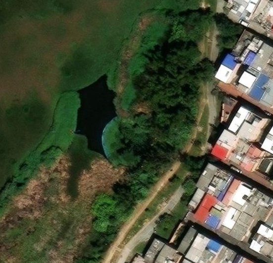

Un balcón sobre el agua
El mirador se encuentra al borde del espejo de agua, entre los árboles y el sendero que bordea el humedal, muy cerca del barrio. Desde allí se ven las zonas de juncos y pastos donde las aves comen, descansan y hacen sus nidos.
Localidades de Suba y Engativá, Bogotá
Cerca de 222 hectáreas: el humedal más grande de Bogotá
Sitio Ramsar de importancia internacional desde 2018
¿Qué es un mirador de avifauna?
Avifauna significa “las aves de un lugar”. Un mirador de avifauna es un espacio pensado para observarlas sin molestarlas: te da una buena vista del agua y la vegetación, y te permite quedarte quieto el tiempo suficiente para que las aves se acostumbren a tu presencia y sigan con su vida normal.
Aves que podrías ver
Algunas viven aquí todo el año y otras llegan de visita.
Tingua pico rojo
Nada entre los juncos con su pico rojo brillante.
Tingua pico amarillo
Tímida, camina sobre la vegetación flotante.
Coquito
Ibis oscuro de pico curvo que busca comida en el barro.
Garza blanca
Grande y elegante, pesca quieta en la orilla.
Monjita
Pequeña, negra con hombros amarillos, canta en los juncos.
Copetón
Un clásico de Bogotá, con su copete y su canto.
Recomendaciones para observar
Ve temprano. En la mañana las aves están más activas.
Haz silencio y muévete despacio para no espantarlas.
Lleva binoculares o la cámara del celular con zoom.
No alimentes a las aves. El pan y la comida humana las enferman.
Llévate tu basura. Los plásticos terminan en el agua.
Mascotas con correa y siempre por el sendero.
El humedal es la casa de las aves.
Obsérvalas, disfrútalas y ayúdanos a cuidarlo.